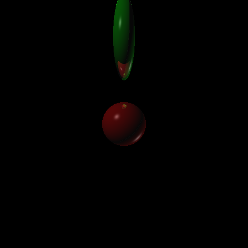
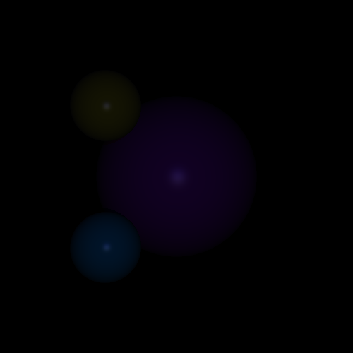

Raytracer
This is the presentation of the results from the raytracer implemented by Siqi Zuo and me. We did most of the class design following the raytracer design note with some heavy customization, of which we felt extremely proud
Some design choices
We made some design choices which we felt necessary to mention there
The most promiment feature is the normalization of colors. Without normalization, we experience very bright and vibrant colors like shown below. However, due to the additive nature of color, color is maxed out at (255,255,255) at some points, which produces an ugly ringy artifect discussed in lecture. For the sake of color accuracy and numerical stability, we decided normalize our color. We did this by recording the highest rgb value in the image and normalize all values to that maximum and scale everything to 255. This leads to our images being significantly darker but it is more numerically accurate. Most of the image below are color normalized unless otherwise specified. We also have the un-normalized version by side for reference.
Usage
- Scene Setting:
- Camera and viewing screen:
cam ex ey ez llx lly llz lrx lry lrz ulx uly ulz urx ury urz - Point light:
ltp px py pz r g b [falloff] - Directional light:
ltd dx dy dz r g b - Ambients Light:
lta r g b
- Camera and viewing screen:
- Geometry:
- Sphere:
sph cx cy cz rad - Triangle:
tri ax ay az bx by bz cx cy cz - Rectangle:
rec ax ay az bx by bz cx cy cz dx dy dzwhere a,b,c,d are the vertices of the rectangle in clockwise traversal - Material:
mat kar kag kab kdr kdg kdb ksr ksg ksb ksp krr krg krbwith phong shading coefficients - Transformation:
rotation:xfr rx ry rzwhere rx, ry, rz are the coordinate values of the vector that encodes rotation
translation:xft tx ty tz
scaling:xfs sx sy sz
- Sphere:
- Others:
- Multithreading: activated by
-mt [number of threads] - Anti-aliasing: activated by
-aa [sampling rate]e.g. a sampling rate of 5 generates 25 samples per pixel
- Multithreading: activated by
The required
- Ellipsoid:
In our raytracer, ellipsoid is constructed with proper scaling or a sphere. For example, the below sphere is contructed with the following object setting
mat 0.1 0.1 0.1 1 0 0 1 1 1 50 0.9 0.9 0.9
xft 0 0 -17
xfs 4 2 2
sph 0 0 0 1
From left to right: normalized, unnormalized.
Here is one picture of multiple ellipsoids with reflections from the design journal.

From left to right: normalized, unnormalized.
- Render polygons:
We support rendering from the input of a obj file. We break up the vertices into triangles and start rendering. We also support rendering of a trianlge from command line, usetrito input a triangle. Here is an example:
This is rendered from this file - Phong shading:
The shading functionality of this assignment is mostly borrowed from the implementation in the previous assignment. Here we have a comparison between the rendering between raytracer (on the left) and shader (on the right). Note that since we normalize the color to the highest rgb value of the entire image, the raytracer results are necessarily darker. For example:
Diffuse and ambient:
ltd 1 -1 -1 200 200 200
mat 0.1 0.1 0.1 0.5 1 2 0 0 0 50 0 0 0
sph 0 0 -4 1


from left to right: raytracer normalized, raytracer unnormalized, shader
Added specular:
ltd 1 -1 -1 1 1 1
ltd -1 1 1 1 1 1
mat 0.1 0.1 0.1 0.5 1 2 2 1 0.5 50 0 0 0
sph 0 0 -4 1
from left to right: raytracer normalized, raytracer unnormalized, shader
- Shadows:
With raytracing, shadowing effect comes as inherent trait as long as the ray intersection is handled correctly. For example:ltd 1 -1 -1 1 1 1
ltd -1 1 1 1 1 1
mat 0.1 0.1 0.1 1 0 1 1 1 1 50 0 0 0
sph 0 0 -20 3
mat 0.1 0.1 0.1 1 1 0 1 1 1 50 0 0 0
sph -2 2 -15 1
- Reflections:
Reflections are implemented by creating reflected rays and making recursive calls on the reflected rays. For example, we added an reflective triangle to the above scene.
mat 0.1 0.1 0.1 1 0 1 1 1 1 50 0 0 0
sph 0 0 -20 3
mat 0.1 0.1 0.1 1 1 0 1 1 1 50 0 0 0
sph -2 2 -15 1
mat 0.1 0.1 0.1 0 1 1 1 1 1 50 0 0 0
sph -2 -2 -15 1
mat 0.1 0.1 0.1 0.1 0.1 0.1 1 1 1 50 1 1 1
tri 5 5 -17 1 4 -20 6 -1 -20
From left to right: normalized, unnormalized.
- Linear transformation: we supported three types of linear transformation (translation, rotation and scaling). Scaling is implemented with respect to the center of the object (NOT the world center). In the below examples, we keep the red sphere fixed as reference and apply the transformations onto the green sphere.
- original:
- translation 2 on -y direction:
xft 0 -2 0
- scaling by 0.5 on x axis and 2 on y axis:
xfs 0.5 2 1
 - rotation by 40 degrees counter-clockwise about z axis:
xfr 0 0 40
- combined:
xft 0 4 0 xfr 0 0 40 xfs 2 0.5 1 xft 0 -4 0 \
- original:
- Point and directional lights:
Directional lights in all the above examples, we used directional lights of the following settingsltd 1 -1 -1 1 1 1 ltd -1 1 1 1 1 1
Point lights has a fall off property, we provide three choices:

which are no falloff, linear falloff and quadratic falloff from left to right. Normalization is turned off to show the effect of fall off. - output:
We used the same output C++ bitmap_image library as last time. Useout [filename]to specify the outputfile name
Extra Credits
-
Multi-threading
We quickly realized that rendering is very computation heavy which leads us to use multi-threading to speed up the rendering process. We break up the rendering of the image screen to thread blocks based on y axis -- for better cache performance. For example, if we deploy 5 threads to render a 500 by 500 image, thread one will handle the first 0 to 100 rows of pixels in the image and so forth. With multi-threading, the rendering time is significantly reduced, especially on larger inputs. Use
mt [NUM_OF_THREADS]to activate, relevant code can be found in Scene.cpp andScene::render_mtfunction Anti-aliasing
We use multiple jittered-sampling anti-aliasing. Activate by
aa [sampling rate], i.e. a sampling rate of 5 will lead to 25 samples per pixel. We then average the sample color values as the final color for the pixel. This increases computational task tremendously but thankfully we implemented multithreading support. The effect is remarkable.
The right is anti-aliased version. The benefits are best observed at the alleviation of the jaggy effects at the boundary where two spheres meet. The effects are more pronouced when the spheres are further and less pixels are used to feature the details.
The anti-aliased version of the beautiful ellipsoids are-
Programmable shading
We came up with two artistically appealling programmable shading algorithms: marble pattern and rainbow pattern.
The marble shading is obtained by scaling the coefficients of phong shading, using randomly adjusted sine and cosine scaling factors based on the three components of the point position vector. Details refers to
ProgrammableShading.hThe rainbow pattern is obtained by scaling of the rendered color by non-linear distortions of polynomial interpolations.
ProgrammableShading.h